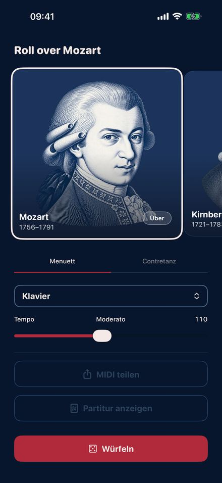
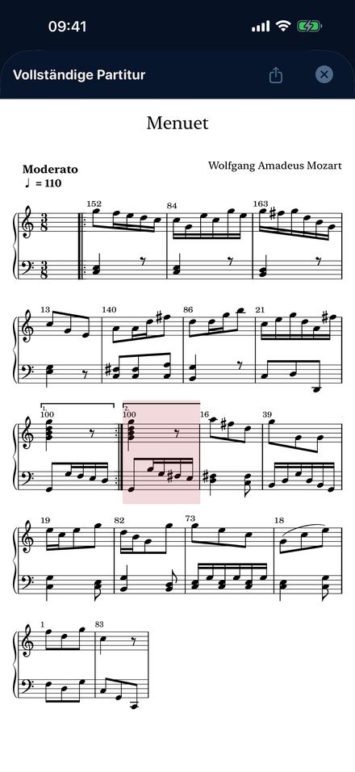
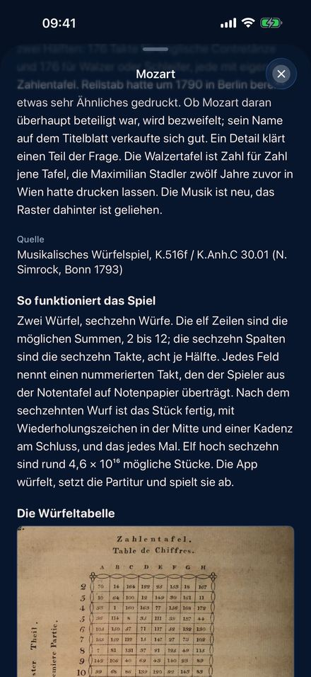
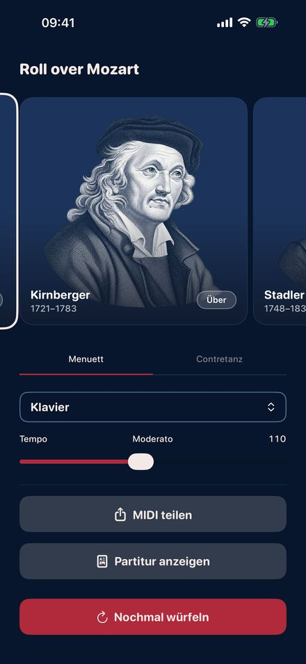

Im achtzehnten Jahrhundert erschienen Drucke, mit denen jeder Musik komponieren
konnte, ohne eine Note lesen zu können. Jeder Wurf zeigt auf einen nummerierten
Takt in einer Tabelle. Sechzehn Würfe ergeben ein fertiges Stück, in der
richtigen Tonart, mit einer sauberen Kadenz am Schluss. Roll Over Mozart spielt
vier dieser Spiele, Takt für Takt nach den originalen Tabellen.
Demnächst im App Store.

Würfeln

Die Partitur Ihres Wurfs

Die originale Tabelle

Vier Komponisten
Vier gedruckte Spiele
MozartDas Musikalische Würfelspiel, 1793 unter seinem Namen in Bonn erschienen: ein Menuett und ein englischer Contretanz, je 176 nummerierte Takte, zwei Würfel, sechzehn Würfe.
KirnbergerBerlin 1757, das älteste von allen. Menuett und Trio mit einem einzigen Würfel, dazu eine Polonaise von 154 Takten mit zweien.
StadlerWien 1781. Menuett und Trio eines Benediktiners, der Mozart wie Haydn gut kannte, gedruckt zwölf Jahre bevor das Mozart-Spiel sein Zahlenraster übernahm.
C.P.E. BachSechs Takte doppelter Kontrapunkt „ohne die Regeln zu kennen“. Jede Oberstimme passt auf jede Unterstimme, und Bach erzählt seinen Scherz mit unbewegter Miene.
Was Sie damit tun
Würfeln, und Sie hören es sofort.
Instrument und Tempo mitten im Stück ändern.
Die Partitur Ihres eigenen Wurfs Takt für Takt mitlesen, während sie erklingt.
Sie mitnehmen: Noten als PDF oder eine MIDI-Datei für jedes Musikprogramm.
Die Geschichte jedes Drucks lesen, mit der originalen Würfeltabelle und den Seiten nummerierter Takte.
Hier denkt sich nichts etwas aus
Jeder Takt stammt vom Komponisten und wurde im achtzehnten Jahrhundert gedruckt,
übernommen ohne eine geänderte Note. Die Würfel bestimmen nur die Reihenfolge,
genau so, wie es gemeint war. Das ist die älteste generative Musik, die wir
kennen, zweihundertfünfzig Jahre vor dem ersten Chatbot.
Außerdem
Elf Instrumente, von Klavier und Cembalo bis Geige, Flöte und Kirchenorgel.
Tempo von schleppend bis rennend. Sechs Sprachen. Kein Konto, keine Werbung, kein
Tracking, und es läuft im Flugmodus. iPhone und iPad mit iOS 26.2 oder neuer.